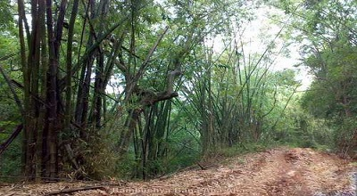
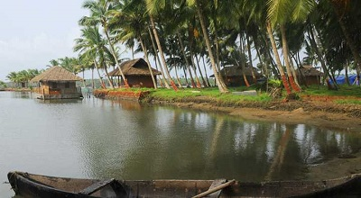

Malom Wildlife Sanctuary
A popular tourist attraction of Kanhagad region, Malom Wildlife Sanctuary is all about lush green tropical green forest and variety of wildlife.
The sanctuary inhabits a variety of animals and birds including peacock, the Malabar hornbill, wild pig, flying squirrel, rhesus monkey and porcupine etc. If you are lucky, you may also get to see king Cobra and Python.

Cheruvathur
Cheruvathur is a cosy small town in the Kasaragod district of Kerala, located only 10 kilometres south of the major town of Nileshwaram. The place is known for being the birthplace of great 19th-century poet Mahakavi Kuttamath of Kerala. His work on musical drama and poem compilations is an excellent source of literary inspiration in Cheruvathur. Keeping that in mind, authorities changed the name of the town to Kuttamath Nagar on paper. However, most people still call the town Cheruvathur only.
The etymology of the name has its origin in the Malayalam words "cheriya pathu ooru" which means ten small places. Cheruvathur mainly attracts tourists because of its lovely views and greeneries. But more than that, it is a peaceful suburban retreat for a short weekend trip. There are not many places which you can visit. So, you can spend the time with your loved ones as much as you want to. Cheruvathur and its surroundings is a favourite picnic spot for the same reason. People from nearby places flock in during the peak seasons for an outing and enjoy the day far from the city's cacophony.